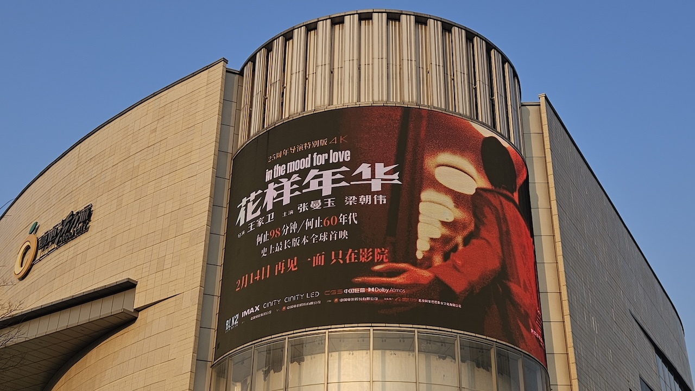
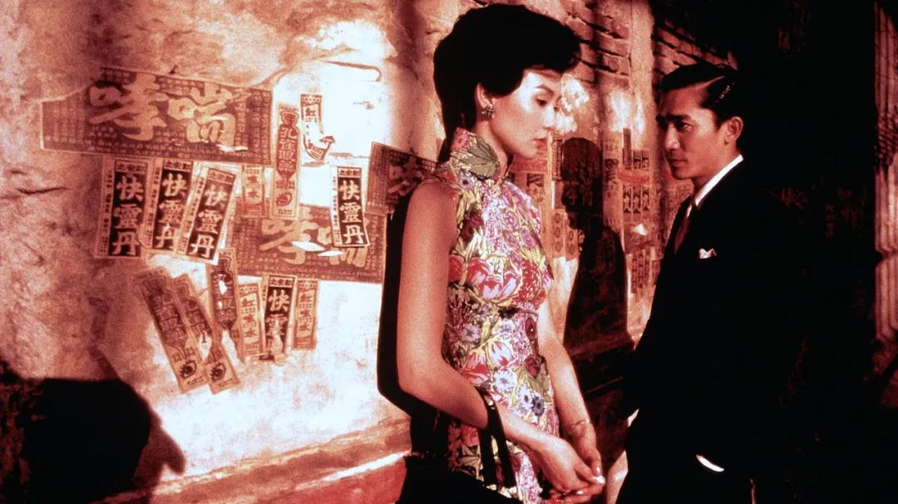
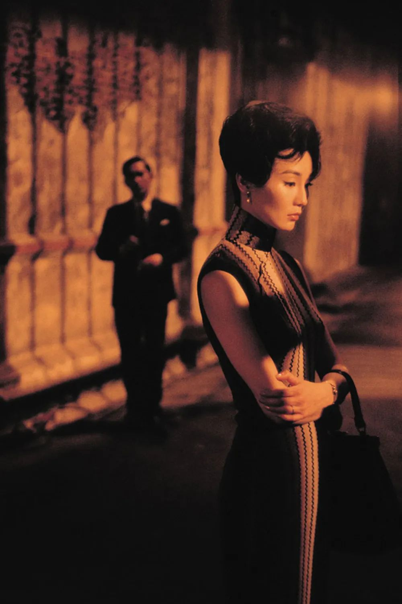
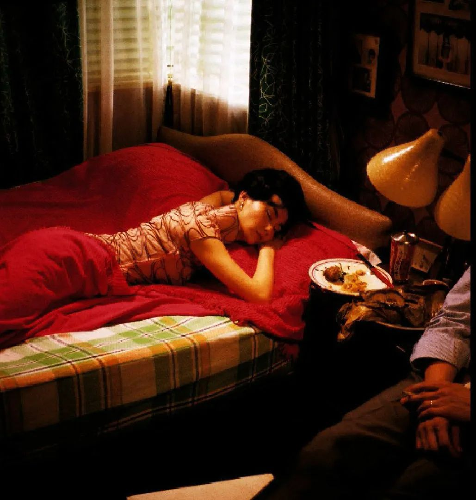

2025-02-26 重看《花样年华》，依旧美到窒息
目录

第一次看这部电影我才十几岁，那时候的我只觉得电影里的一切都充满了高级感——演员的颜值、粤语的韵味、旗袍的优雅、香港街景的浪漫。还有那句经典的台词“如果我多一张船票，你会不会跟我走？”，一听就是一个绝美BE爱情故事。

第二次看这部电影在拍婚纱照之前。我选择的婚纱摄影，只是因为他们走廊里挂着一组《花样年华》风格的婚纱照，充满了复古的优雅，我觉得特别好看，特别向往。为了让楚哥理解这部电影的美，我拉着他一起看了一遍。
 今年是《花样年华》上映25周年，电影院特别重映了这部电影。我一直很想去看，但之前忙着准备面试，没时间也没心情。今天面试结束后，我决定给自己一个放松的机会，独自去电影院重温这部经典。楚哥还贴心地帮我买了单人套餐，一杯可乐和一桶爆米花，我带着这些走进了影院。

在大银幕上看《花样年华》真的是一种完全不同的体验。尤其是他们第一次并排走在路上的那一幕，旁边汽车显露一角，整个画面被光影渲染得如梦似幻，美得让人屏息。张曼玉的旗袍造型更是让人目不暇接，每一套都精致得无可挑剔，她的气质与角色完美契合，仿佛她就是那个时代的化身。
王家卫把这段感情拍得极其唯美，充满了克制与隐忍。
这次重映版还增加了两个新片段。一个是他们在柬埔寨重逢的场景，梁朝伟饰演的周先生问张曼玉饰演的苏丽珍：“你给我打过电话吗？”苏丽珍笑着说，“我不记得了”。其实她记得，但这段感情对她来说已经是过去式了。后来她独自带着孩子生活，反而是男主一直无法释怀，找树洞倾诉。
另一个新片段是在电影末尾，导演为了对照1960年代的故事，加入了一个2001年的场景。男主开了一家便利店，女主经常去那里买东西、打电话。她的感情问题被男主无意中听到，后来她的男朋友背叛了她，她去找小三理论，结果流着鼻血出来。
那天晚上，男主亲了女主，我觉得这个吻有点突兀，甚至有点俗气。他亲她的理由是因为女主嘴角有蛋糕渣，而他喜欢干净。我看得有点无语，或许王家卫还是更适合拍那些充满克制的旧时代故事，新时代的情感表达对他来说可能有些不适合。